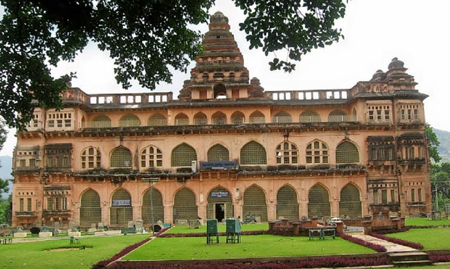
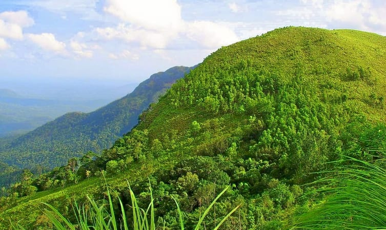

Off the radar for commoners and the land of exquisite folk art, tourist places in Kasaragod are reserved for hardcore and offbeat travelers in troops, pair or alone any time of the day and year. Early morning while our vision is still hazy our ears will automatically attune to the blissful soundscape.
Hosting numerous forts, wildlife sanctuaries, temple protected by a ‘croc’ - say the locals and magnificent hills, Kasaragod is uptown in all aspects. The ultimate traveling destination, has it all to enchant us. The natives are very friendly and the harmony between people of various religions is to be highlighted.
A rare district in India housing seven languages and vivid appreciable cultures. Also, experience the Malabar coastal winds you have been reading about in Geography all this while. Get set to be awestruck and jaw dropped to find manmade and nature blend at its best at Kasaragod.
The 300 years old defensive mechanism which is the largest and well-preserved fort makes it one of the best Kasaragod tourist place. We can get an enthralling view of the mesmerizing Arabian sea from the fort’s observation tower which was once used to fire the cannons!
The impressive strength of the fort brings a herd of tourists to witness the glorious past and be awestruck. Visit an old mosque near this fort to dive deeper into history.

Also, subtly known as the Kanhangad fort. The construction of this fort is what it makes it eye candy for the passerby tourists. What makes it so popular is its chain of forts, that came up in Ikkeri dynasty. Visit this monument to unveil the past.
If seeking some spiritual enlightenment visit the popular spiritual center Nithya Anandashram located in the proximity of this locale. Additionally, this is one of the least explored tourist places in Kasaragod and hails out to the history lovers.
Drowned in history and residing on hill ruins this fort offers a perfect sunset view to its visitors. A serene locale with a panoramic view on display is a picture perfect location. This bizarre fort is squarish in shape and is seated beautifully 150 feet above the sea level.
From this place, we can take the bird’s eye view of the city, and soothe our senses.

Famous for its Nercha fest which lasts for a week this locale witnesses the crowd thronging in the month of November. A must visit masjid of high religious significance. What attracts the devotees and tourists here is its hypostyle structure.
Thangal Uppapa Uroos is a ritual celebrated by the local people to remember the demise of the saint Thangal Uppapa. It takes place once every two years and usually in the month of Dul Hajj.
This destination could be your trekking trail as well as a picnic spot. The majestic view of the lushly green forest canopy is what attracts the adventure lot and leisure hikers. Imagine sitting and taking a bird's eye view of the entire surrounding in peace, which is accompanied by picture-perfect backdrops.
While we hike up the upland, we can witness a wide array of flora and fauna, which will put our under a spell with its beguiling beauty.